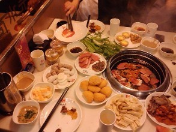

<ion-header>
  <ion-navbar>
    <ion-title>
      附近
    </ion-title>
  </ion-navbar>
</ion-header>

<ion-content>
  <div padding>
    <ion-segment [(ngModel)]="option">
      <ion-segment-button value="food">
          美食
      </ion-segment-button>
      <ion-segment-button value="spot">
          美景
      </ion-segment-button>
      <ion-segment-button value="bedroom">
          住宿
      </ion-segment-button>
      <ion-segment-button value="fun">
          休闲娱乐
      </ion-segment-button>
    </ion-segment>
  </div>
 
  <div [ngSwitch]="option">
      <ion-segment *ngSwitchCase="'food'" [(ngModel)]="food">
            <ion-segment-button value="zizhu">
                  自助
            </ion-segment-button>
            <ion-segment-button value="huoguo">
                  火锅
            </ion-segment-button>
            <ion-segment-button value="riliao">
                  日料
            </ion-segment-button>
            <ion-segment-button value="xican">
                  西餐
            </ion-segment-button>
            <ion-segment-button value="tiandian">
                  甜点
            </ion-segment-button>
            <ion-segment-button value="chuancai">
                  川菜
            </ion-segment-button>
      </ion-segment>
  </div>

  <div [ngSwitch]="option">
  <ion-segment *ngSwitchCase="'spot'">
    <ion-segment-button value="ziran">
          自然
    </ion-segment-button>
    <ion-segment-button value="youlechang">
          游乐场
    </ion-segment-button>
    <ion-segment-button value="gongyuan">
          公园
    </ion-segment-button>
    <ion-segment-button value="bowuguan">
          博物馆
    </ion-segment-button>
  </ion-segment>
  </div>

  <div [ngSwitch]="option">
  <ion-segment *ngSwitchCase="'bedroom'">
    <ion-segment-button value="jingji">
          经济
    </ion-segment-button>
    <ion-segment-button value="minsu">
          民宿
    </ion-segment-button>
    <ion-segment-button value="yanxuan">
          严选
    </ion-segment-button>
    <ion-segment-button value="shushi">
          舒适
    </ion-segment-button>
    <ion-segment-button value="gaoxing">
          高星
    </ion-segment-button>
    <ion-segment-button value="qinglv">
          青旅
    </ion-segment-button>
  </ion-segment>
  </div>

  <div [ngSwitch]="option">
  <ion-segment *ngSwitchCase="'fun'">
    <ion-segment-button value="ktv">
          KTV
    </ion-segment-button>
    <ion-segment-button value="jiuba">
          酒吧
    </ion-segment-button>
    <ion-segment-button value="wangba">
          网吧
    </ion-segment-button>
    <ion-segment-button value="dianwan">
          电玩
    </ion-segment-button>
    <ion-segment-button value="chaguan">
          茶馆
    </ion-segment-button>
    <ion-segment-button value="yingyuan">
          影院
    </ion-segment-button>
  </ion-segment>
  </div>

<div [ngSwitch]="food">
            <ion-list *ngSwitchCase="'zizhu'">
            <ion-item>
                  <ion-thumbnail item-start>
                  
                  </ion-thumbnail>
                  <h2>内蒙古饭店 海鲜自助餐厅</h2>
            </ion-item>
            <ion-item>
                  <ion-thumbnail item-start>
                  
                  </ion-thumbnail>
                  <h2>金韩都自助烧烤.火锅.简餐</h2>
            </ion-item>
            <ion-item>
                  <ion-thumbnail item-start>
                  
                  </ion-thumbnail>
                  <h2>好久不见时光主题自助餐厅</h2>
            </ion-item>
            </ion-list>
      </div>
      
</ion-content>
